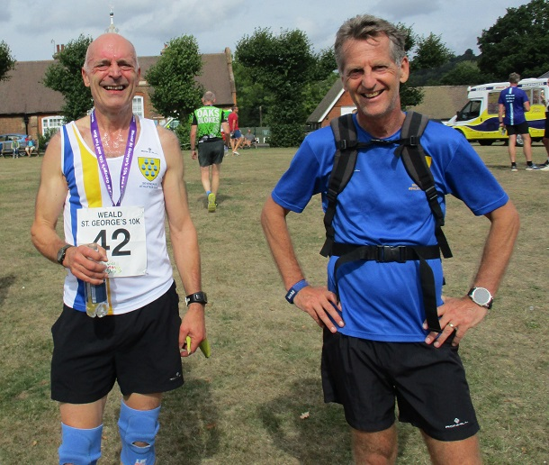
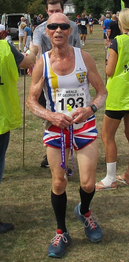
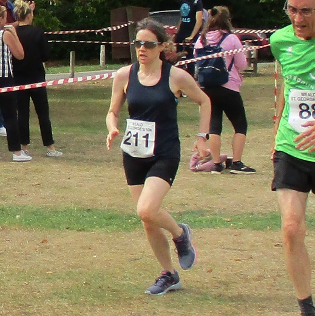
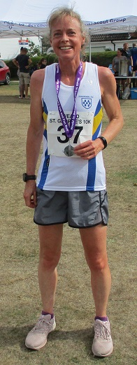

Suzy Claridge was third woman in the Weald 10k on 4th September, as well as first veteran woman and W50.
This was just one of many excellent results by SAC runners at the event including Paul Fanti fourth overall and first M45, Nick Humphrey-Taylor second M45, Andrew Mead second M50, Simon Hallpike third M65 and Lionel Stielow third M70.
The SAC results were:
| Pos | Name | Bib | M/F | Team/club | Category | Gun time | Chip time |
|---|---|---|---|---|---|---|---|
| 4 | Paul Fanti | 59 | M | Sevenoaks AC | Male Vet 45 | 00:38:04 | 00:38:04 |
| 7 | Nick Humphrey-taylor | 95 | M | Sevenoaks AC | Male Vet 45 | 00:40:00 | 00:39:59 |
| 8 | Andrew Mead | 129 | M | Sevenoaks AC | Male Vet 50 | 00:40:09 | 00:40:09 |
| 19 | Jake Frisker | 255 | M | Sevenoaks AC | Male Vet 45 | 00:43:17 | 00:43:16 |
| 23 | Suzy Claridge | 37 | F | Sevenoaks AC | Female Vet 50 | 00:44:17 | 00:44:16 |
| 27 | Chris Desmond | 50 | M | Sevenoaks AC | Male Vet 55 | 00:45:02 | 00:45:01 |
| 35 | Simon Bishop | 229 | M | Sevenoaks AC | Male Vet 55 | 00:47:12 | 00:47:08 |
| 53 | Simon Hallpike | 75 | M | Sevenoaks AC | Male Vet 65 | 00:50:04 | 00:49:59 |
| 102 | Lucy Wilkes | 211 | F | Sevenoaks AC | Female Vet 40 | 00:56:12 | 00:55:56 |
| 128 | Jonathan Copping | 42 | M | Sevenoaks AC | Male Vet 65 | 00:59:16 | 00:58:56 |
| 145 | Lionel Stielow | 193 | M | Sevenoaks AC | Male Vet 70 | 01:03:20 | 01:03:15 |
The full results are here.